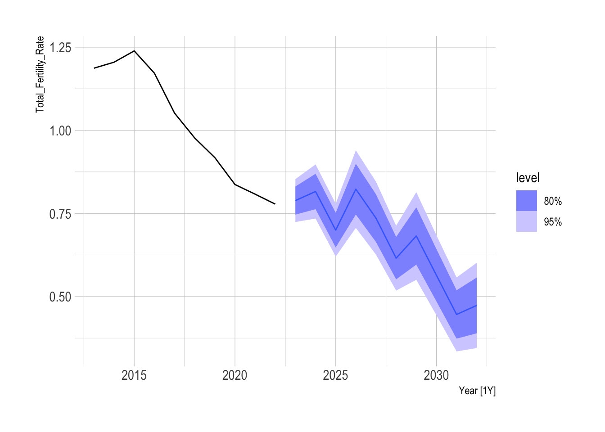

Analysis on the Fertility Rate of South Korea
Declining Global Fertility Rates
Declining birth rates impacts both developing and developed nations. Social, religious, and economic factors, along with urbanization, play a role in birth rates. In wealthier nations, lower birth rates are tied to lifestyle choices, where the costs of raising children—such as housing and education—can be a financial burden. Additionally, women in developed countries tend to delay having children due to higher education and professional careers.
Declining Crude birth rates in 17 countries with advanced economies
Declining birth rates are common in advanced economies, but South Korea stands out as an extreme case. It has the fastest declining birth rate and the lowest fertility rate among these nations. This makes South Korea an outlier in terms of population trends compared to other countries with similarly advanced economies.
South Korea(KOR): Historical Crude Birth Rates
In the initial data visualization of birth rates, clear breakpoints are observed, influenced by government policies. Between 1979 and 1982 (Green), the South Korean government implemented a one-child policy, leading to a sharp decline in birth rates in the following years. However, due to the rapid population decrease, the government reversed this policy beginning in 1990 (Blue), resulting in a slight increase in birth rates for a few years. Despite the changes, the birth rate continued to decline thereafter. The year 2000 (Orange) marks what some refer to as South Korea’s “demographic cliff” (a term popularized by Harry S. Dent), characterized by a rapid decline in the working-age population. This shift is often attributed to changing social norms, where the desire to have larger families has decreased, coupled with the effects of technological modernization.
Similarities between South Korea(KOR) and Japan(JPN)
Japan and South Korea are often compared in terms of birth rates because Japan once held the position of having the fastest declining birth rate, a trend that has recently begun to slow. By examining how Japan managed to reduce its trend of its declining birth rate, it may be possible to identify policies or societal changes that could help South Korea alter its current trajectory.
Both Japan and South Korea have experienced declining birth rates, but over the past 20 years, Japan’s decline has slowed, while South Korea’s has become much more rapid. To better understand the current patterns in each country, it is useful to decompose the birth rate series into its underlying trends.
# A tsibble: 33 x 3 [1Y]
Year jp_trend kr_trend
<dbl> <dbl> <dbl>
1 1991 10.4 15.8
2 1992 10.2 15.9
3 1993 9.97 15.9
4 1994 9.82 15.7
5 1995 9.70 15.4
6 1996 9.59 14.9
7 1997 9.50 14.4
8 1998 9.40 13.8
9 1999 9.31 13.2
10 2000 9.21 12.5
# ℹ 23 more rowsIn fact, when we decompose using Seasonal-Trend by Loess decomposition, the model does not identify a seasonal component but only the trend component and its remainder.
Observation of the historical birth rate trends allows us to clearly see Japan’s slowing trend for the decrease in birth rates while the birth rate for Korea has a historical trend of decreasing constantly since 1970.
Series: Crude_Birth_Rate_per_1000
Model: ETS(A,A,N)
Smoothing parameters:
alpha = 0.9799891
beta = 0.0001000097
Initial states:
l[0] b[0]
31.55917 -0.5021568
sigma^2: 0.9925
AIC AICc BIC
220.8421 222.0921 230.7870 Where this model can be written down as an ETS(A,A,N) model, as below. \[ \hat{y}_{t +h |t} = l_{t} + hb_{t} \] \[ l_{t} = 0.979989y_{t} + (0.020011)(l_{t -1} + b_{t-1}) \] \[ b_{t} = b_{t-1} \] The alpha value close to 1 and the beta value being close to 0 suggests a strong trend, where the change in levels are dependent heavily on the trend, which was intially negative.
Series: Crude_Birth_Rate_per_1000_kr
Model: TSLM
Residuals:
Min 1Q Median 3Q Max
-3.5047 -1.3316 -0.5911 1.6750 3.7062
Coefficients:
Estimate Std. Error t value Pr(>|t|)
(Intercept) -6.57116 0.86949 -7.557 6.4e-10 ***
Crude_Birth_Rate_per_1000_jp 1.94000 0.07561 25.659 < 2e-16 ***
---
Signif. codes: 0 '***' 0.001 '**' 0.01 '*' 0.05 '.' 0.1 ' ' 1
Residual standard error: 1.927 on 52 degrees of freedom
Multiple R-squared: 0.9268, Adjusted R-squared: 0.9254
F-statistic: 658.4 on 1 and 52 DF, p-value: < 2.22e-16There appears to be a correlation in the historical crude birth rates between the two countries, suggesting that further discussions between them could be beneficial.
Female Employment, Dual Income, and Paternal Leave in South Korea(KOR) and Japan(JPN)
This analysis focuses on female employment rates in both countries, specifically examining women pursuing careers and participating in the workforce.
Female employment has risen in both countries, yet Japan’s birth rate decline is slower than Korea’s. While it was assumed that female employment may lead to similar trends, Korea’s birth rate continues to decline more sharply than Japan’s.
However, Japan has much higher paternal leave rates compared to Korea, for both men and women. The availability of paternal leave may support women in continuing their careers while encouraging earlier childbirth. Therefore, policies that support child care and pregnant women could be a key factor. Additionally, Japan’s higher paternal leave rates for men suggest that male involvement in childcare could have an impact in supporting birth rates.
The availability of child care facilities shows a different trend as well. While government-run facilities have remained relatively unchanged, Japan has introduced new community-based and integrated child care centers, with annual increases as part of its 5-Year Plan to expand child care capacity, started in 2014.
South Korea has been expanding government-run child care facilities, but the growth is slow, and privately run centers are declining. Additionally, workplace child care environments have not significantly improved over the past 20 years, resulting in an overall reduction in the total number of facilities.
Observing these trends, paternal leave proportions and child care availability may help identify ways to improve South Korea’s birth rate. These factors can also be used to forecast future birth rates. Current policy aims to add 500 child care facilities annually. However, as paternal leave legislation is determined by individual companies, we can assume that current leave trends will remain unchanged.
After fitting a multi-linear regression model with these trends, the p-value for the total number of healthcare facilities was not significant at the 95% level. Therefore, the model incorporates only the parental leave rates for both women and men as explanatory variables, along with a trend component. The best-fitted multi-linear regression model, which minimizes the error for rolling forecast origin cross-validation, is as follows.
Series: Total_Fertility_Rate
Model: TSLM
Residuals:
Coefficients:
Estimate Std. Error t value Pr(>|t|)
(Intercept) -8.489e-01 6.987e-01 -1.215 0.27863
fm_leave 5.694e-02 9.776e-03 5.825 0.00211 **
ml_leave -7.116e-02 2.096e-02 -3.395 0.01935 *
num_fac -1.882e-05 1.534e-05 -1.227 0.27434
trend() -1.296e-01 2.131e-02 -6.084 0.00174 **
---
Signif. codes: 0 '***' 0.001 '**' 0.01 '*' 0.05 '.' 0.1 ' ' 1
Residual standard error: 0.02221 on 5 degrees of freedom
Multiple R-squared: 0.9913, Adjusted R-squared: 0.9843
F-statistic: 142.3 on 4 and 5 DF, p-value: 2.459e-05\[ y_{t} = -1.470668 + 0.052485*leave_{women} + -0.049992*leave_{men} -0.108774*trend + \epsilon_{t} \]
We can compare this model to an Moving Average model, which captures lagged values to generate forecasts, the multi-linear model out-performed the MA(2) model with differencing [ i.e ARIMA(0,1,2) ] in RMSE, MAE, and MAPE.
# A tibble: 1 × 10
.model .type ME RMSE MAE MPE MAPE MASE RMSSE ACF1
<chr> <chr> <dbl> <dbl> <dbl> <dbl> <dbl> <dbl> <dbl> <dbl>
1 lm Training -1.17e-17 0.0157 0.0129 -0.0217 1.32 0.226 0.242 -0.432# A tibble: 1 × 10
.model .type ME RMSE MAE MPE MAPE MASE RMSSE ACF1
<chr> <chr> <dbl> <dbl> <dbl> <dbl> <dbl> <dbl> <dbl> <dbl>
1 ARIMA Training 0.0105 0.130 0.0950 0.691 5.35 0.883 0.836 -0.0185The model suggests that an increase in maternity leave could positively impact the birth rate. However, current trends indicate that other factors—captured by the trend-has double the effect, being the largest contributors to the declining birth rate.
To stabilize the birth rate, it is important to set higher targets for maternity leave percentages. Using the model, we can generate scenario-based forecasts for South Korea’s birth rate by 2030, considering current trends in paternity leave.
Series: Total_Fertility_Rate
Model: TSLM
Residuals:
Min 1Q Median 3Q Max
-0.029039 -0.011998 0.002839 0.012943 0.024865
Coefficients:
Estimate Std. Error t value Pr(>|t|)
(Intercept) -1.470668 0.501122 -2.935 0.026125 *
fm_leave 0.052485 0.009451 5.553 0.001442 **
ml_leave -0.049992 0.012405 -4.030 0.006879 **
trend() -0.108774 0.013394 -8.121 0.000187 ***
---
Signif. codes: 0 '***' 0.001 '**' 0.01 '*' 0.05 '.' 0.1 ' ' 1
Residual standard error: 0.02313 on 6 degrees of freedom
Multiple R-squared: 0.9887, Adjusted R-squared: 0.983
F-statistic: 174.6 on 3 and 6 DF, p-value: 3.1656e-06If we set a goal of achieving an 84.5% maternity leave rate by 2023, the birth rate forecasts become more optimistic, with potential fertility rate increases around 2030. This scenario could result in a total fertility rate of 0.51 by 2030, compared to 0.42 in the previous forecast—an approximate 20% improvement.

Conclusion
South Korea’s declining fertility rate is driven by socio-economic and policy factors, particularly inadequate child care support and lower paternal leave rates. Compared to Japan, there is room for improvement in child care and higher paternal leave rates, as it has slowed its birth rate decline. South Korea continues to struggle. A multi-linear model that fits paternal leaves as an explanatory variable suggests that increasing maternity leave to 84.5% by 2023 could improve South Korea’s fertility rate by 20%, reaching approximately 0.51 by 2030. To reverse the trend, South Korea must prioritize enhanced child support policies, especially around child care and parental leave.